一、 微信公众号
1. src
2. ngrok
2.1 内网就是局域网，在本机部署一个项目，不在一个局域网内的人是无法访问的。ngrok通过在外网搭建一个服务器，把本机上的访问地址映射到一个公网的地址，实现本地部署的项目暴露到公网上
2.2 usage
2.2.1 https://www.ngrok.cc/user.html上注册，
2.2.2 隧道管理 - 开通隧道
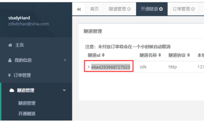
2.2.3 下载客户端，启动bat，不要启动exe，启动后将隧道id复制进命令中就完成了本地项目公网暴露
3. 架构
3.1 移动端发送请求到微信服务器，微信服务器再把请求转给自己的服务器
3.1.1 ==》需要设置验证，保证自己的服务器只能被自己的微信公众号访问
{1} 验证需要客户端(微信服务器)和服务端(自己服务器)有相同的signture。自己设置一个token，微信服务器生成时间戳和随机数。然后将这3个数按字典序排序后拼成一个string的signature，然后将时间戳和随机数和成功标记echostr发给自己服务器，自己服务器本身就有token，然后将接收到的这3个数按字典序排序后拼成一个string，然后进行md5或sha-1，生成sign，然后跟穿过来的signature对比，如果相同，说明验证成功
{2} 微信平台无法管理自己服务器上代码，所以统一规定，只要返回echostr，就算成功。echostr就是用来返回的
{3} 在微信公众平台设置自己服务器的url和token
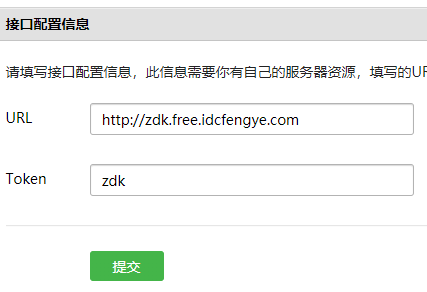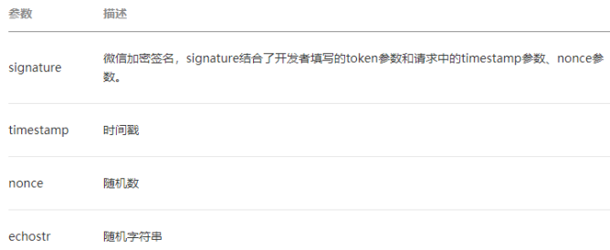
[1] 点击一次提交就会向自己服务器发送一次请求，如果返回的是echostr，就算成功
{4} note
[1] restController也可以接收请求体中的参数，不用非得按restful风格将参数设在url中。
[2] 官方提供包括java的验证类
4. 搭建
4.1 注册微信公众号
4.1.1 微信公众号包括订阅号和服务号，注册不要钱，认证要钱，服务号需要提供组织机构代码证
4.1.2 在公众平台首页 - 左侧边栏最下面 - 开发中进行开发配置
4.2 注册微信开发者账号，也可以用测试账号，有了账号才能调API
4.3 创建ngrok服务器，关联自己的项目
4.4 将公众号关联自己的服务器
5. usage
5.1 调用微信API
5.1.1 调用微信API使用restful风格，access_token是调用任何一个微信API都必须传的参数
{1} 微信的API可以使用httpclient发送请求，将access_token作为参数传入即可
5.1.2 access_token
{1} 获取之后，会有有效期，7200秒，刷新过程中，5分钟内新老accessToken都可以用。获取一次刷新一次
{2} 一般获取一次后放到redis或数据库或用outStream写入到本地文件中，等expire_time后再获取一次
{3} 一般使用定时任务来自动获取
/** |
/** |
5.2 自动回复
5.2.1 src
{1} 架构中，自己服务器对微信前端暴露的接口就一个，就是一开始配置的接口信息。微信的任何操作都往这个url上发。
{2} ==》此处有坑，接口配置验证的时候，返回值是微信给的echostr，等配置成功，这个url对应的controller就要改代码，把返回值设别的，因为只有在配置的时候才会提交echostr参数，当然也可以在SMVC中给echostr参数设个默认值。
{3} 微信中强行规定，消息发送和返回都要用xml，虽然微信提供的测试页可以用json，但实际中只支持xml。
{4} signature, timestamp, nonce3个参数每次交互都会传，用来验证当前操作的用户是否是自己的客户端。
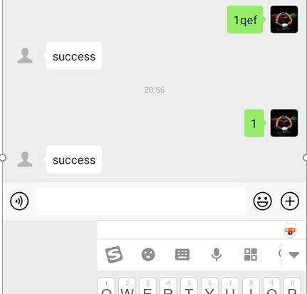
5.2.2 controller的编写

{1} 先判断是否是合法的客户端，如果是，从request中获取请求体，转成xml，获取输入的值，根据输入值拼xml的字符串，直接返回给前端。
{2} 此处虽然用的@RestController，但返回xml，微信端仍能正常获取xml。
5.3 微网页
5.3.1 src
{1} 微网页是微信的功能的扩展，因为微信作为一个app，无法提供所有功能，比如电商、问卷调查、第三方服务的个性化需求。所以就以web页面的形式提供了一种可以自定义的模板，开发者可以使用这个模板来开发各种应用。
{2} 问题：
[1] 微网页如何不脱离微信的管理，如何确认访问自己的用户是否合法，如何确认这个开发者有调用微网页API的权限
(1) redirect_uri就是自己开发的微网页，里面的js可以调用微信提供的JS-SDK，可以通过微信调用手机硬件。
(2) redirect_uri要手动使用urlEncode进行编码。
(3) 这个redirect_uri配置的是可以被微信访问 且 能调用微网页API的域名，这个域名下面的域名也可以，注意域名的概念
调用微网页验证的api， | https://open.weixin.qq.com/connect/oauth2/authorize?appid=APPID&redirect_uri=REDIRECT_URI&response_type=code&scope=SCOPE&state=STATE#wechat_redirect |
参数 | 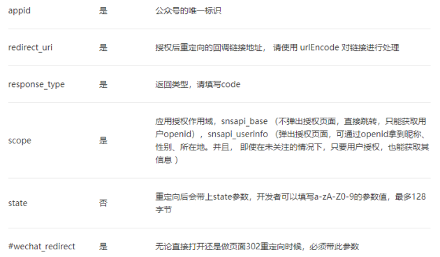 |
|
|
|
|
5.3.2 测试号搭建
{1} 在测试号管理中
[1] 因为ngrok暴露的域名不带www，所以在js安全域名中设置时也不要带www。接口配置这里是必须要带http://
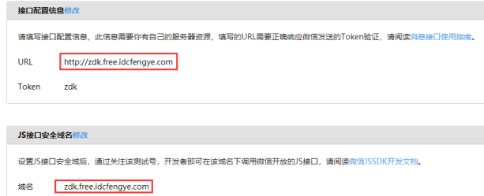
[2] 在下面的网页账号中，也配置域名
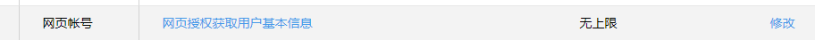
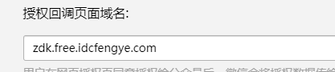
{2} 设置一个click的按钮，url设置为微信API提供的，点击后就可以访问微网页了
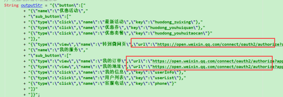
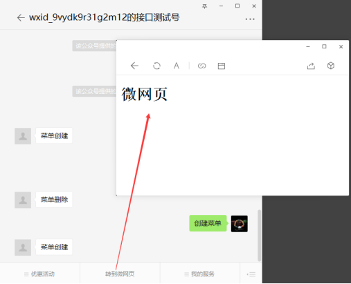
5.3.3 正式号搭建
{1} 需要在虚拟服务器的根目录下放一个文件，可因为现在用的是ngrok，不能直接访问虚拟主机。将txt文件放到resources下打包到tomcat上也不行。所以此功能暂时没法实现，但原理跟上面测试号一样。
5.3.4 usage
{1} https://developers.weixin.qq.com/doc/offiaccount/OA_Web_Apps/JS-SDK.html
二、 微信小程序
1. src
1.1 背景概念
1.1.1 为什么会有小程序
{1} 拥有更好的原生应用的体验，保证页面资源快速加载
[1] 原生应用
{2} 微信可以更方便的接入和管理小程序应用
{3} jssdk，根据网页开发标准，可以轻易饶过微信的管控和标准，微信小程序由自己的一套框架和描述语言
1.1.2 小程序
{1} definition
[1] 相当于移动端的BS架构的web项目
{2} 同应用程序的区别
[1] 可以在多个场景接入
(1) 扫描，链接，搜一搜
{3} category
[1] 内容、零售、游戏、第三方服务、
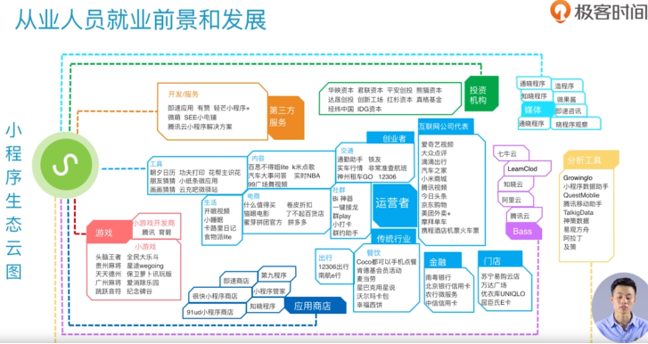
{4} 生态指数
1.2 开发前的准备
1.2.1 注册账号
{1} 微信公共平台，右上角立即注册，选择小程序申请
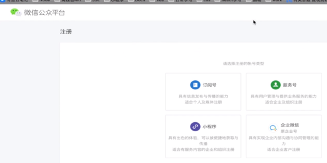
{2} flow
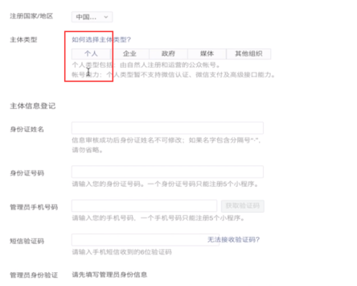 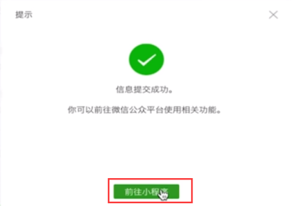
{3} 微信后台管理平台
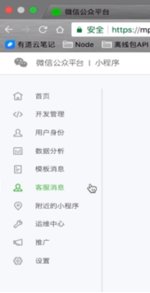
{4} 安装开发者工具
[1] 微信公众平台-小程序-小程序开发-工具-下载-安装-扫码登录
1.3 开发工具使用
1.3.1 创建小程序的项目
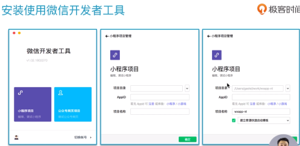
1.3.2 进入开发界面
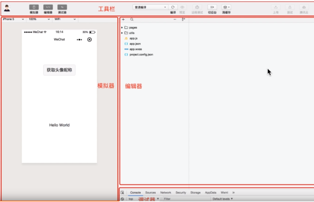
1.4 hw
1.4.1 项目目录结构
{1} 4文件2文件夹
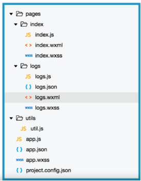
app.js | 注册 |
|
app.json | 全局配置 | 页面注册路径， 网络 窗口表现 |
app.wxss | 全局样式 |
|
project.config.json | 开发工具的个性化设置 |
|
pages | 项目所有页面 一个页面一个文件夹，最多由4个文件组成 | app.js 页面逻辑、数据交互 app.json 配置文件，以json格式配置 wxml就是html，微信将其语义化、个性化，页面元素和内容 wxss就是css |
utils | 工具函数，代码复用 |
|
|
|
|
1.5 开发框架
1.6 原生组件api
1.7 核心技术、技能
1.8 实战项目
1.9 note
1.9.1 微信公众号可以以个人身份无限制开发。
1.9.2 小程序以个人身份开发时(无appid)，无法使用支付功能，无法在手机预览，但可以在开发工具预览。
1.9.3 小程序自带IDE
1.9.4 小程序没有dom，前端3大框架都不推荐直接操作dom。
1.9.5 百度 微信小程序 简易教程
2. 工具
2.1 应用
2.1.1 注册、登录
{1} folw
[1] 可以开发小程序和公众号
[2] 选择无appid
[3] 输入项目名称、目录(代码保存位置)、快速创建单选框(选了会有些默认目录和代码)
2.1.2 开发页面
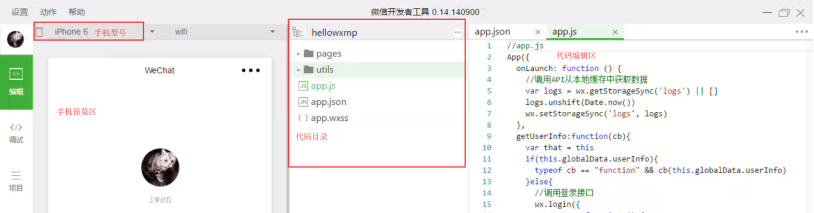
{1} 预览区会同步显示代码效果
{2} sources 源码
[1] app.js就是所有的源码，app.js表示上传的，真正的源码时app.js[sm]，打断点只能在这里打
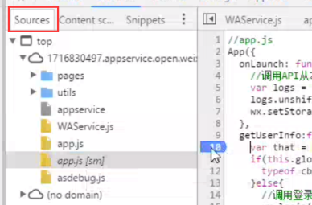
{3} wxml
[1] html标签
{4} sensor
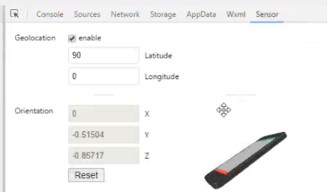
[1] 传感器，就是感知手机的物理状态，
{5} 项目选项卡
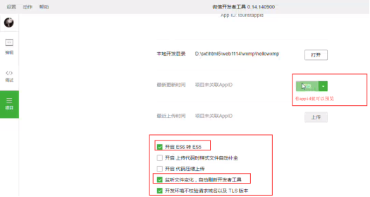
2.2 调试
3. 框架
3.1 src
3.1.1 让开发者可以在微信中开发具有原生APP体验的服务
3.1.2 无法操作dom，使用setData的方式
3.2 目录结构
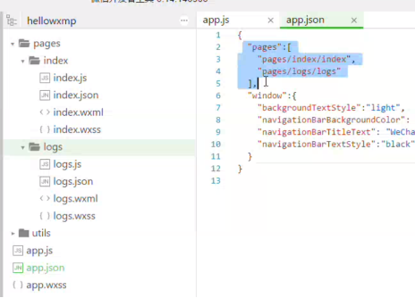
3.2.1 一个微信项目的代码的目录结构，项目由页面组成，一个页面由4部分组成，这4个文件的名字必须相同且位于同一文件下，依靠后缀区分，但可以跟文件夹名字不同，但一般也把文件夹名设置为相同。
{1} 这样设置主要为了减少配置项，方便开发
页面逻辑 |
|
| |
app.json | 配置文件，以json格式配置 |
|
|
wxml | 就是html，微信将其语义化、个性化 |
|
|
wxss | 就是css |
|
|
{2}
3.2.2 app.json
{1} 位于一级目录，用来进行全局配置，文件内容为一个 JSON 对象
{2} 属性
window | 全局的默认窗口展示样式设置，比如背景颜色，导航条样式，字体等 |
|
pages | 文件入口，页面路径列表，用于指定小程序由哪些页面组成。访问小程序会先访问pages，通过pages分发 |
|
tabbar | 底部tab栏 |
|
debug | 是否开启debug模式 |
|